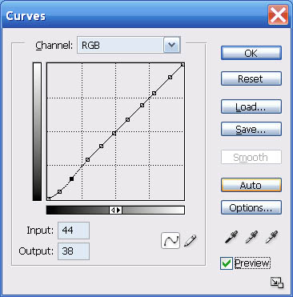
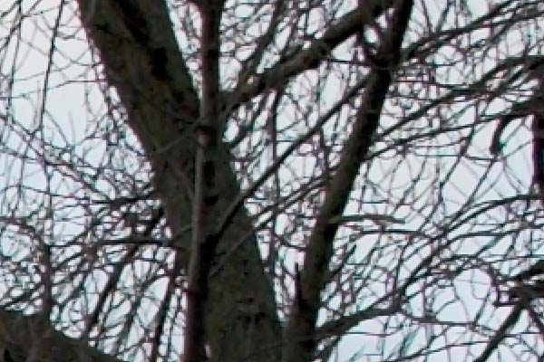
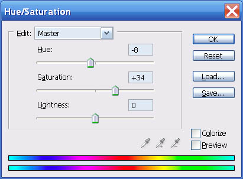

|
Digital Editing 101Following an Art Photograph from Capture to Print-ReadinessVersion 1.3, © 2006 by Dale Cotton, all rights reserved Intro: I've received some requests lately for more introductory instruction on digital editing. In this tutorial I use RawShooter Premium and Photoshop but the actions should be easily reproducible using a variety of raw conversion and image edit products. SilkyPix, Adobe Camera Raw, Paintshop Pro, and Adobe Elements come to mind. Update 2009: And now, of course, Lightroom. Again: the RawShooter steps below are easy to reproduce in Lightroom, ACR, Capture One, etc. CaptureI took the picture romantically titled 06-2569 with my Pentax DS on a tripod along the Lake Ontario waterfront near where I live at dawn in mid-October 2006. This is a site I've worked many times and probably wouldn't have re-visited, except that I wanted to introduce it to a friend. Exposure was 400 ISO, f/8, 1/50th sec. As you can see from the small amount of red (blown-highlights) warning, the exposure was pretty accurate in an expose-to-right kind of a way. One interesting thing about this image is that its dynamic range is less than that of the camera. Notice that the histogram does not reach all the way to the left edge. Because the exposure pushes the histogram all the way to the right edge of the histogram, we are avoiding the noise and the lack of tonal gradations that live on the left/dark side of the Force.
Fig. 1: 06-2569 as shot then opened in RawShooter Raw ConversionOpening the pic in RawShooter, first I cropped the frame slightly to change the aspect ratio to 7:10 and to emphasize the composition that I see as the small acolyte tree on the left edge bowing in respect to the large Old Master tree on the right edge. ;) (Cropping and composition are of course personal decisions that no two of us will ever fully agree on.) I normally leave white balance at auto, which proved a mistake for this shoot, as you can see from the extreme colour temp correction I had to introduce and which still did not entirely neutralize the image.
Fig. 2: RawShooter adjustments Fig 2 is the final set of raw adjustments for this pic. A small reduction in exposure eliminated nearly all the blown highlights. In the curve tool I set the black point and the mid point then added a curve to further open the dark areas without lightening the sky. We can see that another challenge of this shot will be to deal with the darkness of the land and trees while keeping the sky from going too bright. If there was significant noise I would deal with that now, otherwise time to convert and send to Photoshop as a 16-bit TIFF. (If you want to follow along, download this file. It's a 75% downsample of the 16-bit TIFF converted to a 524 KB JPEG.) There are various philosophies regarding how much editing to do in the raw converter and how much to do in the image editor. The raw converter has direct access to the raw data, so my approach is to spend the time to get colours and contrast as close as possible to my final goal in the raw converter. The more extreme the modification, the less distortion will be introduced in the raw converter before TIFF generation than after. Why 16-bit? In 8-bit image formats, such as JPEG, each colour number is specified as being in the range from 0 to 255. If you apply something like a curve to such a pixel the curve might say "darken the colour by 43.41%. If the original colour happens to be, say, 133, then the new colour will be 133 x 43.41 = 57.7353. But only whole numbers are allowed so the new colour will be rounded to 58. Editing
Fig. 3: Opened in Photoshop Now we're in Photoshop where we can see the image at a larger size and get a better read on what's going on. A further curve will open the dark foreground without compromising the sky:
Fig. 4: Initial contrast curve A second curve applied just to the blue channel, neutralizes the effect of the blue cast on the foreground vegetation:
Fig. 5: Blue cast curve Creating curves is one of the most valuable skills you can acquire. Your computer needs to be fast enough that you can leave preview on and watch any changes you make in real time. Here is where you get to be a master chef instead of a rote recipe follower. The master chef seasons to taste and the master image editor creates curves that bring an image alive. There are three basic rules: 1) introduce no abrupt changes (kinks) in your curve; 2) never raise a point at the left side of the curve higher than any point to its right; and 3) the more radical the curve the more important it is to work in 16-bit mode. I now inspect the foreground at actual pixels because I'm concerned whether there is enough contrast in the shoreline undergrowth. Looks OK, but if not I would have used LCE or a further curve tweaked at the shadow end to increase the contrast.
Fig. 6: Foreground inspection at actual pixels That about does it for anything I can do as a global edit. Past time to do a Save As... into the PSD file format. I'm already pretty happy with the sky and water, but suspect there's a lot more I can do with the foreground. So I use Select->Color Range... to select the sky, then invert, leaving me with just the foreground selected.
Fig. 7: Select Color Range dialogue Tip: save yourself some grief - avoid trying to change contrast of sky vs non-sky in a picture with tree branches like this one has using a non-feathered selection such as this. Note that in Photoshop CS and later I could use the Replace Color... dialogue to combine the Select All with the Hue/Sat. Either gets you to exactly the same place. Now that I can concentrate on the foreground, I use the yellow channel (slightly expanded) of the Hue/Saturation tool to desaturate and shift to a warmer hue:
Fig. 8: Hue/Sat yellow channel adjustment The Master channel of the Hue/Sat. tool is a fairly blunt instrument. For refinement either create a selection of your image before going into Hue/Sat. or use the colour channels and their sliders to limit its reach. Now I do want more contrast, so I use the following curve:  Fig. 9: Second contrast curve - which locks down all but the shadows then deepens the near-blacks. Here's where we are now:
Fig. 10: After foreground edits I like the foreground pretty well, but the change in hue clashes a bit with the sky, so I invert the selection and head back to the Hue/Sat. dialogue to tweak the sky and water hue to an even bluer shade:
Fig. 11: Hue/Sat colour shift ... And surprisingly - that's it. I remove the sky selection and try to find a curve to further enhance the drama of the stormy scene, but no joy. I try selecting just the goldenrod along the shore line and bringing the yellow colour of that out more, but no joy. So now to peruse the image carefully at 200% mag. and deal with any defects like the chromatic aberration in the upper right:  Fig. 12: Chromatic aberration seen at 200% mag. What else to use for CA zapping but our trusty Hue/Sat. dialogue? My CA remedy is to lasso an area containing CA, go to Hue/Sat., change to the appropriate channel (usually magenta or yellow (for lime CA), narrow the colour range as needed, then move the saturation slider to desaturate as needed. (I've saved a number of successful hue/sat. adujstments for re-use as needed.)
Fig. 13: Hue/Sat. magenta channel to remove magenta CA I also cloned out a few disorderly bits of undergrowth and would have also cloned out any waste paper, pop cans, etc. if there had been such. All that's left is to prepare the image for printing and/or computer display. My own routine involves upsampling to 150% then doing some hocus-pocus to crispen the acutance to something more like the painter's brush strokes that I'm attached to. For most people it's more a matter of sharpening to taste with USM or some third-party tool. Coming back to this image a day later with fresh eyes, the only thing that bothers me is that the acolyte tree on the left is too dull. I circled the tree with the lasso tool in Photoshop, then used Select->Color Range... to select just its leaves. I then applied the following Hue/Sat. and Curve to bring it more in line with the rest of the foliage:
Fig. 14: Acolyte leaf selection  Fig. 15: Acolyte colour shift
Fig. 16: Acolyte contrast curve Which brings us full circle to the hopefully now final version: Fig. 17: Final cut (click to enlarge - warning: 1 MB file). AfterwordIn this tutorial I've concentrated on the Photoshop Curves and Hue/Sat. tools which both work in 16-bit mode. There are many sophisticated and complex ways to edit an image involving layers, masks, blend modes, etc., etc. Sometimes you will in fact need to delve into these exotic realms to get the job done. What we've covered in this lesson are the bread-and-butter tools that should serve for the majority of your editing needs. There are two especially frustrating issues in image editing for the beginner. One is learning how to use all the tools available; this can be conquered with time and patience. The other is a feeling of inadequacy regarding one's aesthetic judgement. Why did Dale make just the changes he illustrated above and no others? It may not seem to be the case now, but this too is just a matter that time and patience will overcome. It's important to realize that in making the changes I made above, I was not moving toward some single ideal version of the raw image. If I had started work on this image yesterday or tomorrow instead of today I might well have ended up somewhere very different. If some other artist had started from the same raw file she would very likely have ended up somewhere very different. Part of the reason it's called art instead of science is for this very reason, that there is no single correct answer to any aesthetic decision. That said there is a practical distinction between the first efforts of an amateur chef to create her own goulash recipe and the seemingly effortless creation of a veteran chef. The distinction is that the former may very well taste so bad that it has to be tossed. So the first principle of image editing is never to burn your bridges. Always preserve your raw file and quite possibly the original TIFF you generated from it, so you can go back to square one if needed. If you spend an hour cloning out a phone wire running across the full length of your picture, save that much work before proceeding to introduce a radical colour shift or sharpening procedure that may ruin the entire "meal". As an art student I once saw a short movie made of Picasso creating a painting on glass of a Riviera beach scene. Pablo with brush and paints on one side of the vertical glass pane; camera on the other. He started out quickly and deftly, then had to wipe out an area, repainted, then wiped again. In the end he was not satisfied with the image and declared it an instructive failure. This may well be the most important lesson a creative artist can learn. If Picasso allowed himself to fail, so can you. To an artist, the eraser is every bit as important a tool as pencil and paper. Next stepsLearn about palette power and tone sculpting when you're ready in Digital Editing 102: Making it Sing |


{kind=link}
{kind=link}